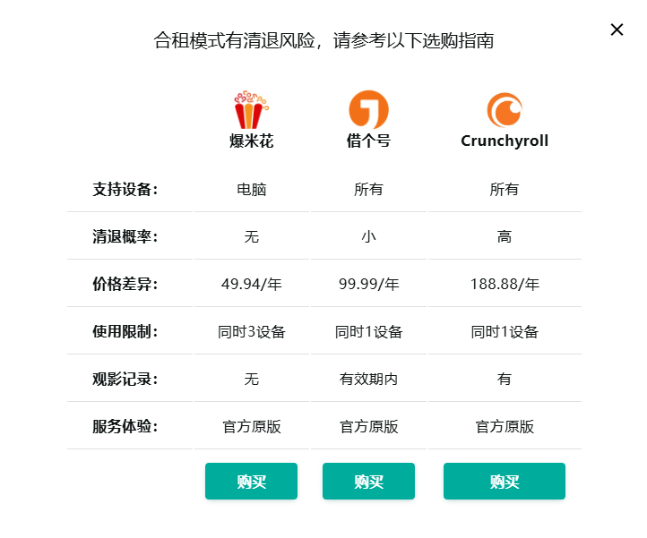
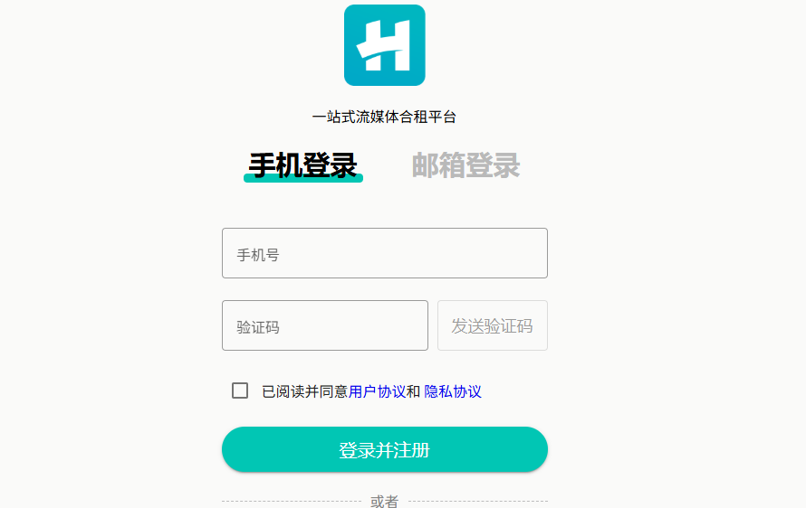

分享 Crunchyroll 帐户：你需要了解的一切

动漫迷们都知道，订阅 Crunchyroll 就能畅享无尽的娱乐世界，从最新联播到经典剧集，应有尽有。但如果能以极低的价格享受所有这些内容，那该有多好啊!
在本指南中，我们将探讨如何安全有效地共享 Crunchyroll 帐户，帮助你在不花费太多的情况下最大限度地享受订阅权益。无论你是经验丰富的动漫爱好者还是新手，了解帐户共享的方方面面都能为你的观看体验开辟新的可能。
你可以共享 Crunchyroll 帐户吗？
Crunchyroll 深受动漫爱好者的喜爱，它提供海量的节目和电影资源，足以让粉丝们乐此不疲。但随着订阅费用的不断增加，许多用户开始思考：我可以与亲朋好友共享 Crunchyroll 账户吗？答案是可以的 ，但需要注意一些重要事项。如果你正在考虑共享 Crunchyroll 账户以节省成本，那么了解该平台的账户共享机制至关重要。
Crunchyroll 允许一定程度的帐户共享，尤其是在多台设备上同时观看流媒体内容时。根据 Crunchyroll 的服务条款，虽然你可以在不同设备上登录你的帐户，但该帐户仅供单个家庭或一个关系密切的群体使用。从不同位置频繁登录可能会触发安全措施，从而可能限制对帐户的访问。
但使用 环球巴士，共享 Crunchyroll 帐户的管理权限由 环球巴士 控制，而非个人用户。这意味着，在你享受共享订阅服务的同时，环球巴士 会确保帐户得到安全管理，并遵守 Crunchyroll 制定的准则。这种设置可以安全高效地共享，而不会违反 Crunchyroll 的政策。
有多少台设备可以登录 Crunchyroll？
Crunchyroll 允许用户同时在 最多 6 台设备 上观看流媒体内容，具体取决于订阅套餐。例如，如果你选择的是"超级粉丝"或"终极粉丝"套餐，则可以同时在最多 4 台或 6 台设备上观看流媒体内容。这种灵活性对于多人同时观看不同节目的家庭尤其有用。但是，需要注意的是，如果平台检测到来自不同 IP 地址的登录次数异常高，可能会限制你的访问。
幸运的是，使用 环球巴士 时，这些设备限制由平台管理。环球巴士 会确保帐户配置优化，以优化不同用户之间的同步流式传输，同时保持在允许的限制范围内。这意味着你可以共享帐户，而不必担心超出设备限制或触发 Crunchyroll 的安全标志。
Crunchyroll 订阅等级和费用
Crunchyroll 提供多种订阅方案，以满足不同的观看需求。下表列出了每种方案的主要功能和费用，以帮助你选择最符合你偏好的方案。
| 计划 | 成本 | 主要特点 | 同步流 | 离线观看 | 额外福利 |
|---|---|---|---|---|---|
| 免费 | 免费（有广告） | 可以访问大量动漫库，播放时有广告，流媒体质量有限 | 1 | 不 | 没有任何 |
| Fans | 每月 7.99 美元 | 无广告观看，完整动漫库访问，日本时间晚一小时同步播出 | 1 | 不 | 没有任何 |
| Mega Fan | 每月 11.99 美元 | 所有粉丝计划功能、离线观看、独家内容 | 4 | 是的 | 没有任何 |
| Ultimate Fan | 每月 15.99 美元 | 所有 Mega Fan 功能、独家商品、Crunchyroll Store 折扣 | 6 | 是的 | 独家商品、参加特别活动和比赛 |
考虑到功能和价格，Mega Fan 计划对于想要共享 Crunchyroll 订阅的用户来说，无疑是最实用的选择。它兼顾了成本和收益，包括能够同时在最多四台设备上进行流媒体播放，非常适合小团体共享。
如果你想共享 Crunchyroll 订阅，环球巴士 的 Mega Fan 共享计划为你提供便捷的解决方案。你可以以较低的价格享受 Mega Fan 计划的所有优势，并通过 环球巴士 平台进行安全管理。
环球巴士 获取共享 Crunchyroll 帐户
在 环球巴士，我们提供一种简化的方式，让你以更低的价格享受高级订阅服务，我们的共享 Crunchyroll Mega Fan 计划就是一个完美的例子。如果你渴望通过我们的共享订阅服务沉浸在动漫世界中，请按照以下方法开始使用 环球巴士，选择适合你需求的订阅时长。
探索 环球巴士 的订阅共享选项
首先，请访问 环球巴士网站，你将在其中找到我们一系列的订阅共享选项，包括 Crunchyroll。我们的平台设计易于使用，因此你可以快速浏览我们的服务，找到你想要的内容。
选择订阅期限
当你访问 环球巴士 上的 Crunchyroll 版块时，你可以选择最符合你需求的订阅时长。Mega Fan 套餐提供离线观看和独家内容访问等高级功能，是动漫爱好者的绝佳选择。
注册或登录你的环球巴士帐户
如果你是 环球巴士 新用户，你需要创建一个帐户，整个过程快速简便。如果你已经是 环球巴士 用户，只需使用现有凭据登录即可。我们的平台旨在让你轻松管理订阅。
安全完成购买
选择所需的订阅时长后，即可进行付款。环球巴士 提供多种付款方式，确保交易顺利安全。付款处理完毕后，环球巴士 将负责处理剩余事宜，为你设置共享的 Crunchyroll 订阅，让你立即开始观看。
访问你的共享 Crunchyroll 帐户
通过 环球巴士 管理你的订阅，你将获得访问共享 Crunchyroll 帐户所需的登录凭据。这个便捷的流程意味着你无需担心帐户设置或安全问题——只需登录即可欣赏你喜爱的动漫节目和电影。
通过我们的 Crunchyroll Mega Fan 计划，你可以以较低的成本享受顶级动漫内容，同时受益于我们安全且用户友好的平台。
结论：你应该分享你的 Crunchyroll 帐户吗？
通过 环球巴士 分享 Crunchyroll 账户不仅是降低订阅成本的明智之举，还能便捷地访问离线观看和独家内容等高级功能。环球巴士 提供的 Mega Fan 套餐在价值和功能之间实现了理想的平衡，是希望享受丰富流媒体体验又不想花费太多的动漫爱好者的理想之选。
选择 环球巴士，你可以无缝共享 Crunchyroll 帐户，同时享受安全账户管理带来的安心无忧。还等什么？立即开始共享 Crunchyroll 帐户，以更低的价格开启精彩的动漫世界。立即访问 环球巴士 ，开启你的观看体验！